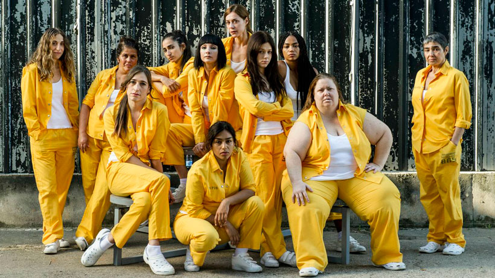

En este capítulo vemos presentes muchos momentos clave para poder terminar de cerrar algunas ideas y abrir otras. Al principio vemos el encuentro de Maca y El Egipcio en medio de un tiroteo en el bosque, después de que este les haya disparado a Castillo y Fabio. Macarena logra dispararle para salvar a su hijo. Después, vemos a Rizos fingiendo un dolor de cabeza para poder acompañar a su novia en su primera ecografía. Más adelante vemos a Zulema provocando a Maca para sacarle información acerca del bosque y su novio, pero esta vez no se queda callada sino que se anima a afrontarla y le dice que si logra irse de Cruz del sur, sería una alegría para todas las reclusas. A continuación, vemos a la Directora hablando con Rizos para contarle que se le iba a poder conceder el modulo de semilibertad solo si conseguía un trabajo. Más tarde, Maca tiene un vis a vis con su padre y su hermano porque se enteraron lo ocurrido en el bosque y querían saber cómo estaba. Al final del capítulo, vemos como Ferreiro se anima a decirle a Zulema que le había disparado al Egipcio y la amenazo por defensa de su hijo.
